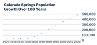
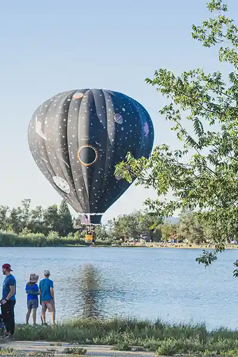

Towering at 14,111-ft, Pikes was the inspiration for , "America the Beautiful."
Population Growth
 Colorado Springs keeps growing, and attracting people from all over the world!
Military Oppoortunities
The military is an essential part of the Colorado Springs local economy. The Air Force Academy, Fort Carson Army Base, Peterson Air Force Base, Schriever Air Force Base, Northern Command and NORAD, are all key installations and a vibrant part of our community.
Commercial and Residential Development
Large scale renovations in the Colorado Springs downtown area, have made way for new luxury apartments, and business suites.
Enjoy the Outdoors
Colorado Springs boasts a vibrant collection of outdoor activities. There are over 100 miles of off street bicycle trails, and multiple excellent hiking trails in the city. The Woods Course Zipline, right outside the city has five ziplines reaching up to 1,500 ft long and heights of 150 feet. There is something for everyone to enjoy in our beautiful city!
Image 1 - 4.5 million tourists vistis Garden of the Gods National Park each year.
Image 2 - Cheyenne Mountain Zoo has one of the largest reticulated giraffe herds of any North American zoo.
Image 3 - The population increase has brought housing developement companies in by the dozens. There are so many great housing options no matter what you need!
Image 4 - From liberal arts universities to technical colleges to a national military institution, the Colorado Springs region is loaded with high learning. Colorado College, University of Colorado Colorado Springs, U.S. Air Force Academy, Pikes Peak Stae College, Colorado Technical Universtiy are all located in Colorado Springs.

Image 5 - Every Labor Day weekend kicks off with aroud 70 hot air ballons lifting into the skies from Memorial Park in south Coolorado Springs.
Image 6 - Colorado Springs is home to the Switchbacks Football Club, a professional soccer team that has built their new home stadium in downtown Colorado Springs. They host at least 16 home games which all feature a firework show at the end with an average of 7,500 people at each game.